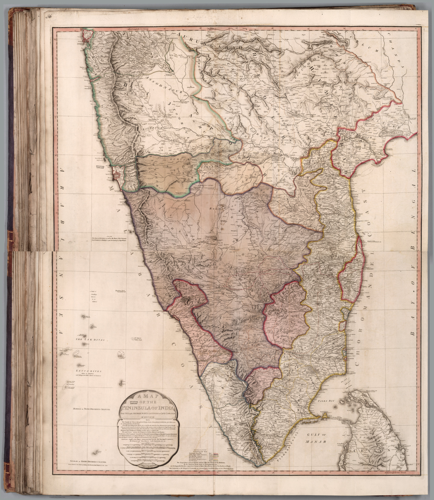

Click to enlargeWilliam Faden's large-scale Map of the Peninsula of India from the 19th Degree North Latitude to Cape Comorin — a detailed British survey map of the south, published amid the Anglo-Mysore wars. The survey gaze applied to the very region Britain was fighting to control.
Authorship and object
William Faden (1749–1836), Geographer to the King and the leading British map publisher of his day, issued this large multi-sheet map of the southern peninsula in 1792, at the substantial scale of about 1:1,330,000.
Survey at the scale of campaign
The map's date and detail are inseparable from the Third Anglo-Mysore War (1790–92): a large-scale, road-bearing depiction of the very theatre in which the Company was contesting Mysore, drawing on the military surveys the wars themselves generated.
The gaze
This is the survey turned to immediate strategic use. The peninsula is rendered at the resolution an army needs — roads, distances, terrain — the map functioning less as a description than as an instrument of the campaigns then reshaping southern India.